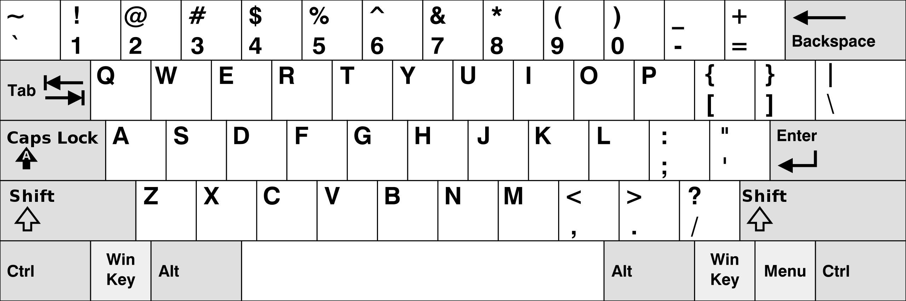
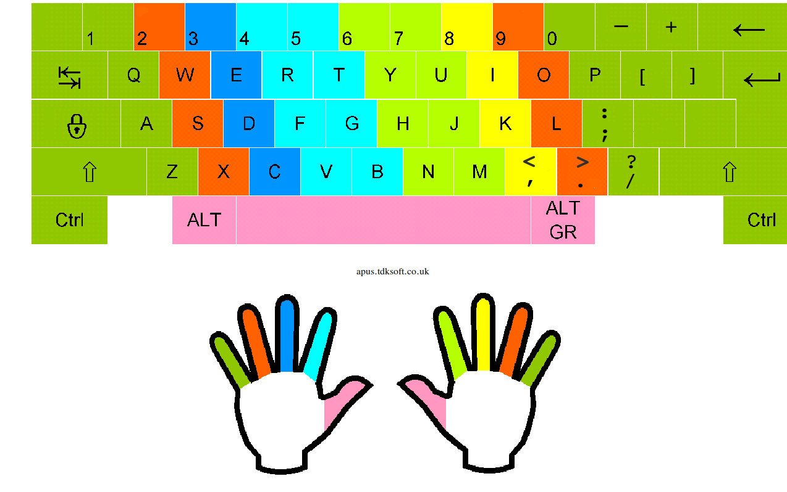
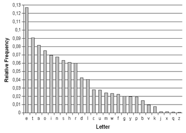
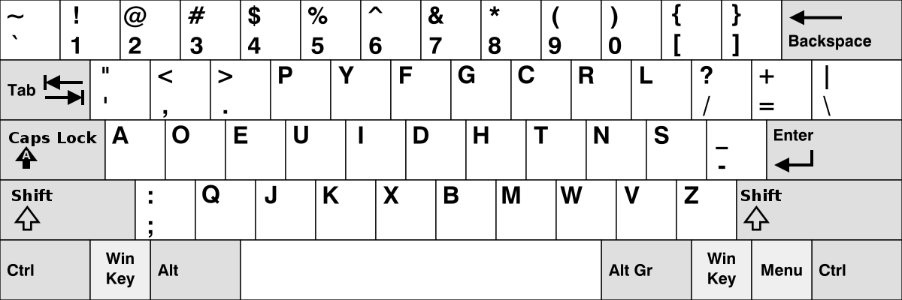
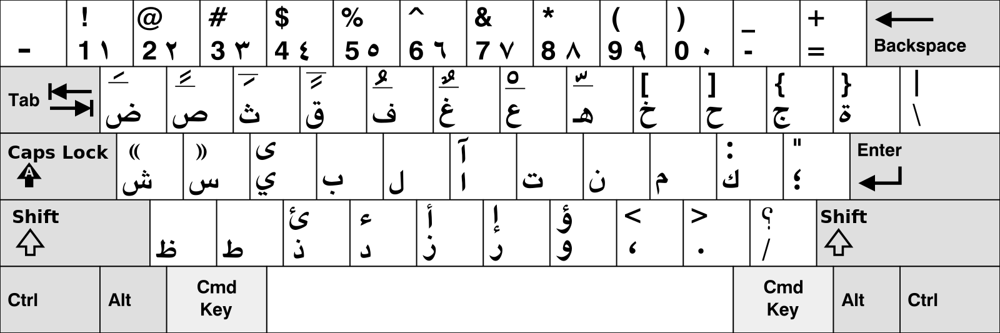
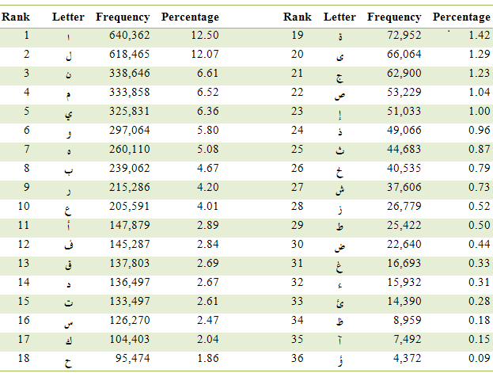

رحلتي من الكويرتي الي الدفوراك
بسم الله الرحمن الرحيم
قائمة المحتويات
المقدمة
لاشك أن لوحة مفاتيح الكويرتي في الكتابة هي الاكثر استخداماً في العالم، وهي الاشهر وقد يتخيلها معظم الناس انها لوحة المفاتيح الانجليزية الوحيدة لشهرتها، ولكن العجيب في ذلك انها ليست أفضل لوحة مفاتيح لا في السرعة ولا في توزيع الأزرار. بل الأعجب أن الكويرتي لم تكن مصنوعة في الأصل للوحة مفاتيح الحاسوب. ولكن هي ليست الشئ الوحيد الذي يستخدم لشهرته وليس لأنها الافضل أو الأصح، تستخدم فقط لأنها إشتهرت لسبباً أو لآخر
الكويرتي.. كيف بدأ
الكويرتي سمت كذلك (QWERTY) نسبتاً لأول حروف الصف العلوي من الكي-بورد، راود معظمنا سؤال عندما استخدمنا لوحة المفاتيح ونحن صغار: لماذا لوحة المفاتيح بهاذا الشكل، لماذا لا تكون مرتبة بترتيب الابجدية وهذا الاوضح مثلا؟ ودار في ذلك اجابات عديدة، وكانت دائماً إجابات تقال لنا مثل هذا الترتيب صنع ليبطئ الكتابة أو ليسرعها ولكن الحقيقة مختلفة قليلا عن تلك فلنبدأ من البداية… من أين اتت لوحة المفاتيح؟
لوحة المفاتيح بشكل مقارب جدا ليومنا هذا كانت مستخدمه في الآلة الكاتبة الميكانيكية، وفكرة استخدام الكويرتي كانت لحل مشكله، وليس كما يزعم البعض لتقليل السرعة او تزويدها، بل كانت لحل مشكلة انحشار الازرار الميكانيكية المجاورة لبعضها عند الضغط عليهم في نفس الوقت، وهذه المشكلة طبعا كما هو واضح تقتصر فقط على الازرار الميكانيكية، وهذا يتركنا إلي سؤال اخر، لماذا في عصر لواحات المفاتيح الكهربية التي لا يوجد فيها مشاكل ميكانيكية لا نزال نستخدم الكويرتي.
الاجابة بسيطة وهي لان اللوحة اشتهرت بشكل واضح جدا، وكان من المنطقي اثناء ابتكار "الكي-بورد" ان يعيدوا استخدام ما هو كان مشهور آن ذاك. لكن هل فعلا كان اختيار سليم؟

شكل 1: لوحة المفاتيح - كويرتي
الكتابة بالمس
الكتابة السليمة على لوحة المفاتيح قائمة على الكتابة باللمس (touch typing) وهي الكتابة بالاعتماد علي الذاكرة العضلية، وهي ان تُحفٍّظ اصابعك الحروف وتجعلها تعتاد عليها، فبذلك تستطيع ان تكتب بدون النظر علي لوحة المفاتيح، ولتعلمها تبدأ بوضع أصابعك على صف الارتكاز (home row) وهو الصف الأوسط كما في الصورة وتجعل لكل أصبع مجموعة معينة من الحروف مسئولٌ عن الضغط عليها وهي الحروف المحيطه به. وتستطيع تعلمها على موقع مثل: typing.com

شكل 2: طريقة وضع الأصابع
عيوب الكويرتي
على الرغم ان الكيورتي لم تكن مصنوعة خصيصاً للوحات المفاتيح، ولكن هي تبلي بلاءً حسناً. وكما قلنا هي في الحقيقة مصنعة لتقلل مشكلة الانحشار و ذلك بانها باعدت ما بين الأزرار الواردة أن يكبس عليها بشكل متزامن، و هذا لا يفيد الآن، فنحن الآن نتوقع مثلًاً وضع لوحة المفاتيح بشكلٍ ما لتزيد من سرعة الكتابة أو تقلل حركات الأصابع الغريبة. لكي تعرف إن كان وضع لوحة المفاتيح مثالي فيجب مبدئياً أن تنظر علي صف الإرتكاز، فإن كان الصف يتكون من الحروف الأكثر إستخداماً في اللغة فهذا يجعل حركة الأصابع أقل و من ثم تقلل أوجاع المصحوبة بالكتابة الدائمة وتقلل الاصابة بـ متلازمة الإجهاد المتكرر (RSI) وهي أوجاع ناتجة عن تكرار حركات غير مريحة وهذا قد ينتج مثلًاً من الضغط المتكرر على حرف ال"ذ" -في اشهر اللوحات العربية- لوقوعه أعلى يسار اللوحة وهذا يجعلك تمد الخنصر في كل مره تريد أن تضغط عليه.

شكل 3: اكثر الحروف ظهورا في الكلمات الانجليزية انظر ايضاً
بنائاً على هذا، إذا نظرنا إلى صف الارتكاز في الكويرتي، فلن نجد فيها أشهر حروف اللغة الإنجليزية، وهي الحروف المتحركة (Vowels) وفعلا تحاليل تكرار الحروف على جمل اللغة الإنجليزية تقول أن حروف صف الأرتكاز مستخدم بنسبة ٣٤٪ فقط، مما يجعل معظم حركة الأصابع بعيدة عن صف الأرتكاز. من هذا نستنتج أن معظم وقت الكتابة على الكيورتي تكون في الصف الأعلى أو الأدنى وهذا قد يؤدي إلى آلام في اليد والأعصاب إن كنت تكتب باستمرار يومياً.
ما هو دفوراك هل هو الحل؟
الحل قد يكون واضحًا الآن، وهو ان نستخدم لوحة مفاتيح تكون أكثر الحروف إستخداما في المنتصف اي صف الأرتكاز، وهذا ما فعله دفوراك (DVORAK)، دفوراك كان دكتور في جامعة واشنطن، و كان قد انتشر الكتابة باللمس في هذا الوقت، وقرر اعادة النظر في لوحة المفاتيح واعادة ترتيب الحروف، وكان تركيزه في تقليل حركات الاصابع وزيادة سرعة الكتابة، بأنه درس تكرار الحروف وحللها، واستطاع بعد ذلك ان يجعل نسبة استخدام الحروف في خط الارتكاز ٧١%، وعند النظر إلى صورة اللوحة ستجد انه وضع اكثر الحروف استخداما في صف الارتكاز يليها الصف العلوي ثم الصف الاسفل. وفعلا هذا الترتيب يجعل الجهد المبذول على الأصابع اقل بكثير ونري النتايج من هذا الموقع ان الجهد المبذول اقل بأكثر من ٢٥٪. ولكن رغم هذا الدفوراك ليست اللوحة المستخدمة الاولي في العالم، ويرجع لانها ظهرت بعد الكويرتي ب٦٠ عام فلم تستطيع تغطي شهرتها، ولكن استطاعت في الظهور قليلا ولها العديد من المحبين، ولآن تجدها في كل نظم التشغيل مثل ويندوز، لينكس وماك، وايضاً في الهواتف الذكية، وغير ذلك يمكنك أن تجد القليل من البرامج والألعاب تتدعم الكتابة بها واللعب بها.

شكل 4: لوحة المفاتيح - دفوراك
كيف كانت الرحلة لتعلم الكتابة بالدفوراك؟
عندما قررت ان ابدأ في تعلمه، كنت استطيع ان اكتب الكويرتي جيدًا بسرعات قد تصل احيانا إلى ٧٠ و٨٠ كلمة في الدقيقة(ك/د) (WPM)، كان قرارًا صعبًا ولكن كنت اريد تجربته بعد أن قرأت عن آراء مستخدميه، وفعلًا بدأت تعلم الكتابة به، ولفعل لذلك لا تحتاج ان تشتري كي-بورد من نوع معين، يكفي ان تغير إعدادات اللوحة من الكمبيوتر من نظام التشغيل، وأول المشاكل التي قابلتني بما أن ترتيب الحروف ليس كما ظاهر على ازرار الكي-بورد، فكان الموضوع صعبا في البداية واحتجت إلي شهر لأكتب بسرعة منطقيه حوالي ٣٥ ك/د، وتستطيع ان تري هذا في المخطط البياني ففي ديسمبر ٢٩ سنة ٢٠١٩ كنت قد بدأت بسرعة ١١ ك/د، وهذه السرعة تعد بطيئة جدا وعادتاً تشعر بعدم القدرة على أن تكمل التعلم بسبب ذلك البطء الذي قد يعصبك احيانا، ولكن في هذه النقطة من التعلم يجب ان تحاول ان تكتب باستمرار بنفس الطريقة وإلا لن تتطور بسرعة، وبعدها بشهر وصلت ٣٥ ك/د، وفي فبراير كنت قد جاوزت حاجز ال٤٠ ك/د، عندما تصل لهذه السرعة الكتابة تصبح اسهل وتكون قد جاوزت اصعب فترة في التعلم. والان استطيع ان اكتب مثل ما كنت اكتب بالكويرتي.

شكل 5: معدل تعلمي مع الوقت
هل انصح احد باستخدام الدفوراك؟
هذا قد يبدوا غريبا ولكن لا اري في العموم انك عليك ان تتعلمها وذلك لسببين:
- ستخسر الاختصارات مثل ctrl+c وctrl+v وما إلى ذلك، انظر إلى مكان حرف الc في لوحة دفوراك، فموقعها تغير تمامًا مما سيجعلك تغير عادات اصابعك مع الاختصارات، وقد تظن أن السيطرة علي يديك وهي تطغط على هذه الاختصارات امر يسير ولكن صدقني الامر ليس كذلك مع معظم الناس والحل هنا هو انك تجبر نفسك على تعلم اماكن الاختصارات الجديدة، او تجد حيلة لتحويل الكي-بورد إلى كويرتي عندما تضغظ على ctrl وهناك بعض البرامج لفعل ذلك ولكني لا ارجح هذا الحل.
- ان كنت تستخدم الكي-بورد في اللعاب الكمبيوتر فكل شيءٍ سيكون سخيفا لأن حروف WASD ليسوا في اماكنهم، وطبعا إن كنت لاعباً ستفهم ماذا تعني هذه الحروف لك، والحل هنا ان تستخدم الكويرتي في اللعب او تكون اللعبة تقبل لوحة مفاتيح دفوراك.
و لكن انصح باستخدام دفوراك ان كنت تكتب على الكي-بورد بستمرار في عملك اليومي، او افضل يمكنك ان تستخدم كوليماك (colemak) يجدها البعض افضل من دفوراك وتشارك نفس الاختصارات مع الكويرتي.

شكل 6: لوحة المفاتيح كوليماك
كيف نسطيع ان نستفيد من هذا مع كيبورد اللغة العربية؟
والآن دعنا ننظر الى لوحة المفاتيح العربية. أولا اللوحة العربية المشهورة في الويندوز لا أجدها جيدة لبعد حرف الذين في الصف الرابع مع الأرقام، ولهذا أستخدم لوحة المفاتيح ال ماك وستجد شكلها أسفل.

شكل 7: لوحة الماك
ولكي نحلل اللوحة اكتر دعنا نستخدم معدل تكرار الحروف من الصورة التالية.

شكل 8: تحليل تكرار الحروف العربية. المصدر
نجد أن صف المنتصف يملك ٥٦.٥٨ ٪ من نسبة الحروف، واعتقد يمكن صنع افضل من ذلك لو بدلنا حروف مثل الكاف والشين السين بالواو والهاء والعين مثلا، ستزيد النسبة إلى ٦٦.٢٣ ٪، تقريبا عشرة بالمئة زيادة بمجرد تغير ثلاث حروف فقط. من المثير للذكر ان لوحة مفاتيح القديمة لحاسوب صخر مميزة عن باقي اللوحات، ستلاحظ انها تستخدم زر الرفع (shift) أكثر من اللوحات الأخرى لتنقل للحروف المتشابهة، وبالطبع شركة صخر لها مجهودات عظيمة في ادخال اللغة العربية عالم الحاسبات، مع ذلك الاعتماد على الضغط المستمر على الزر الرفع ليست ايضاً فكرة مريحة للأصابع ولهذا مازلت اجد لوحة الماك اريح قليلا، بالرغم أن التاء المربوطة بعيدة قليلا على اليمين في الصف العلوي. قد ابدأ في النظر في تحسين قليلا في لوحة الماك الفترة القادمة و ربما اكتب شيء عن التجربة لاحقا.
شكل 9: لوحة المفاتيح صخر
الملخص
تكلمنا في هذا المقال عن ما هي لوحة الكويرتي ولماذا هي مشهورة، وتكلمنا ايضا عن الكتابة باللمس وذكرنا عن لوحات تهتم بتقليل الجهد على الاصابع و الاعصاب مثل الدفوراك والكويرتي، وحللنا بشكل مبسط اللوحة المفاتيح العربية ماك وضعنا بعض الملاحظات عليها وعلى اللوحات العربية المشهورة الاخرى.